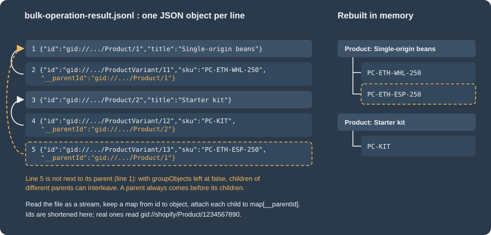

Bulk Operations
|
This content was generated with the assistance of AI and should be verified against the official documentation before being relied on in production. |
Bulk operations are the Admin GraphQL API’s mechanism for moving a lot of data in or out of a shop without paginating or throttling by hand. This page was written against the Admin GraphQL API version 2026-10 and Shopify CLI 5.0.0 (Node.js 22.12 or later), and every fact was checked on 2026-10-27. Bulk operations are a feature of the Admin API only: the Storefront API has no equivalent. The guides state no plan restriction for them, and the limits that apply are listed in Limits.
The page explains the two kinds of operation (a bulk query that exports data and a bulk mutation that imports it),
the lifecycle both share, the JSONL file formats, the staged upload that a bulk mutation needs, how to learn that an
operation has finished (webhook and polling), the errors you will meet, the shopify app bulk and shopify store
bulk commands, and a complete client written in Node.js. It continues the
Admin GraphQL API page, which covers versioning, cost-based throttling
and pagination, and it relies on the Webhooks and Events page for
the general webhook model and on
Authentication and Access Scopes for the tokens that
sign the requests. The running example is Pocket Coffee, a small specialty-coffee shop: a nightly export of the
catalogue (18 variants of "Single-origin beans" plus the "Starter kit") and of the week’s order lines, an inventory
snapshot, and a one-off import that seeds products and writes a roast-date metafield on them.
Every GraphQL document on the page was validated against the public Admin GraphQL schema for 2026-10, downloaded by introspection. The Node.js scripts were run, but against a local stand-in HTTP server that replays the response shapes of the Admin API, the signed download URL and the staged upload target. Nothing on this page was executed against a Shopify store: that needs a store and an access token, and no account or credential was created for it. The section What was run and what was not lists exactly what each check covered.
Why bulk operations exist
A normal GraphQL query returns one page of a connection (at most 250 nodes per request) and costs points from a leaky
bucket that refills at a rate depending on the plan, with a hard cap of 1,000 points for a single query. Exporting
50,000 variants that way means hundreds of sequential requests, a client-side throttle, cursor bookkeeping and a
retry loop for every throttled response. Importing is worse: every mutation costs 10 points by default, so thousands of productCreate calls drain the
bucket and then wait on it for the rest of the job.
A bulk operation moves that work to Shopify:
-
You send one small request that names the work: a GraphQL query for an export, or a mutation plus an uploaded file of variables for an import.
-
Shopify runs it asynchronously, without client-side pagination, and counts only the request that started it against your rate limit. The query or mutation that runs inside the operation is not charged.
-
When it finishes you download a JSON Lines (JSONL) file from a signed URL.
Use a bulk operation when you need every node of a connection (a full catalogue export, order history for analytics, all inventory levels), when you must write thousands of objects with the same mutation, or when a synchronous job would spend most of its time waiting for the bucket to refill. Use a normal query when you need a few nodes, an answer within seconds, or data that is not behind a connection (a bulk query must contain at least one connection). Use a webhook or an Events subscription when you need to react to a single change, and a bulk query as the reconciliation job that catches whatever notifications you missed.
The lifecycle at a glance
Both kinds of operation follow the same state machine. Only the way they start differs: a bulk query is one mutation, a bulk mutation first needs the variables file uploaded to a staged target.
The BulkOperationStatus enum of the 2026-10 schema has seven values. The diagram shows the usual paths between them;
Shopify documents the statuses, not a formal transition table.
-
CREATED: the operation was accepted and queued. -
RUNNING: Shopify is executing it;objectCountgrows while it runs. -
COMPLETED: finished;urlholds the result file, or isnullwhen the query matched nothing. -
FAILED: stopped on an error or on a time limit;errorCodesays why, andpartialDataUrlmay hold what was read before the failure. -
CANCELINGandCANCELED: a cancellation was requested, and there can be a short delay before it takes effect. Shopify also cancels operations that have stalled. -
EXPIRED: the result URL is no longer valid.
A client waits while the status is CREATED, RUNNING or CANCELING, and treats COMPLETED, FAILED, CANCELED
and EXPIRED as terminal.
Prerequisites and request shape
A bulk operation is started with ordinary Admin GraphQL requests, so everything in
Admin GraphQL API applies: the request is a POST to
/admin/api/<version>/graphql.json on the shop’s myshopify.com domain, the version is pinned in the URL, and the
access token travels in the X-Shopify-Access-Token header.
-
Endpoint. Use
https://pocket-coffee.myshopify.com/admin/api/2026-10/graphql.json. The two bulk-operation guides on shopify.dev show their query examples under/api/{api_version}/graphql.jsonwithout the/admin/segment, which is the Storefront API path; the Admin API path always has/admin/. -
Scopes. Starting an operation needs no scope of its own. The query or mutation that runs inside it needs exactly the scopes it would need when run normally: reading products needs
read_products, order lines needread_orders(andread_all_ordersfor orders older than 60 days), inventory levels needread_inventory, writing products needswrite_products. A missing scope fails the whole bulk query withACCESS_DENIED, so run the query normally once first and read the error it gives. -
Tokens. The mutation reference states that the bulk mutations are accessible only to supported access tokens. In particular, admin UI extensions cannot start them through Direct API access: connect the extension to your app backend and let the backend start and manage the operation.
-
Versions. The behaviour described below is for 2026-01 and later unless stated. Earlier versions allow one bulk operation of each type per shop at a time and use
currentBulkOperationfor polling. -
Plans. The guides state no plan restriction. The Shopify CLI adds its own:
shopify app bulk executeruns mutations on development stores only.
The BulkOperation object
Every call in this page returns or looks up a BulkOperation. The fields below come from the 2026-10 schema.
| Field | Type | Meaning |
|---|---|---|
|
|
Global ID such as |
|
|
|
|
|
One of |
|
|
Set when the status is |
|
|
When the operation was created and when it finished successfully. |
|
|
Running count of every object processed, children included. Serialised as a JSON string, for example |
|
|
Running count of objects at the root of the query only (products, not their variants). |
|
|
Size in bytes of the file behind |
|
|
Signed link to the result JSONL. Expires 7 days after completion. |
|
|
Signed link to the incomplete result of a failed operation. Expires 7 days after the failure. |
|
|
The document you passed to |
The mutations that start and control operations are summarised here; their arguments are explained in the sections that follow.
| Operation | Purpose |
|---|---|
|
Starts a bulk query. |
|
Starts a bulk mutation over an uploaded JSONL file. |
|
Cancels a running operation. |
|
Looks up one operation. Added in 2026-01. |
|
Lists and filters the app’s operations. Added in 2026-01. |
|
Deprecated: the 2026-10 schema says to use |
|
Reserves the upload target for a bulk mutation’s variables. |
Bulk queries
Starting a query
bulkOperationRunQuery takes the GraphQL document as a string. The document must contain at least one connection
and is executed by Shopify, not by you, so it cannot use variables: build the string in your code. Two arguments
exist in 2026-10: query (required) and groupObjects, a non-null boolean whose default is false (see
The JSONL output format).
The mutation document below takes the inner query as a GraphQL variable, which keeps the quoting of the inner document out of the way.
mutation PocketCoffeeCatalogExport($query: String!) {
bulkOperationRunQuery(query: $query) {
bulkOperation {
id
status
}
userErrors {
field
message
code
}
}
}Source: bulkOperationRunQuery
The variables carry the Pocket Coffee catalogue export: every active product with its variants, SKUs, prices, stock and selected options.
{
products(query: "status:active") {
edges {
node {
id
title
handle
productType
variants {
edges {
node {
id
sku
price
inventoryQuantity
selectedOptions {
name
value
}
}
}
}
}
}
}
}A successful call answers with status CREATED and the new ID:
{
"data": {
"bulkOperationRunQuery": {
"bulkOperation": {
"id": "gid://shopify/BulkOperation/720918",
"status": "CREATED"
},
"userErrors": []
}
}
}Both documents validate against the 2026-10 Admin schema. The response above is the documented shape with Pocket Coffee values; it is not a captured response.
The userErrors array is where rejections arrive. Its code is a BulkOperationUserErrorCode: INVALID for a query
that breaks a restriction, OPERATION_IN_PROGRESS when an operation of that type is already running, and
LIMIT_REACHED when the concurrency limit is full.
Restrictions on the query
Shopify validates the document when you submit it and reports problems in userErrors. The documented restrictions
are:
-
the query must include at least one connection, and a query without one should run as a normal query;
-
at most five connections in total;
-
connections must implement the
Nodeinterface; -
at most two levels of nested connections: products, then variants, then images is fine, products, variants, images, metafields is not;
-
the top-level
nodeandnodesfields cannot be used.
Three arguments that matter when paginating become irrelevant: first is optional and ignored if present, and
cursor and pageInfo are optional and ignored. Remove them from queries you move over from paginated code. Use the
edges { node { ... } } form, which is what every example in the guides uses.
Because Shopify evaluates the query without a client, errors surface differently from a normal request: a
query that is valid but touches a field the app has no scope for fails after it starts, as an operation with status
FAILED and code ACCESS_DENIED. That is why the guides advise running the query normally, on a few rows, before
wrapping it in a bulk operation.
More Pocket Coffee queries
The nightly order-line export, for the roaster’s planning sheet (the filter is Shopify’s search syntax; the query is
the same string you would pass to orders normally):
{
orders(query: "created_at:>=2026-10-01") {
edges {
node {
id
name
createdAt
totalPriceSet {
shopMoney {
amount
currencyCode
}
}
lineItems {
edges {
node {
id
sku
quantity
}
}
}
}
}
}
}An inventory snapshot per location. Two connections, one nested level, and the available quantity per level:
{
inventoryItems(query: "tracked:true") {
edges {
node {
id
sku
inventoryLevels {
edges {
node {
id
location {
id
name
}
quantities(names: ["available"]) {
name
quantity
}
}
}
}
}
}
}
}A range search over a large collection can time out or fail when the search field is not the connection’s sort key.
Ask for the matching sort key, here CREATED_AT, which the ProductSortKeys enum offers:
{
products(query: "created_at:>=2026-01-01 AND created_at:<2026-10-01", sortKey: CREATED_AT) {
edges {
node {
id
createdAt
title
}
}
}
}All three documents validate against the 2026-10 schema and pass the restriction checker shown next.
Checking a query before you submit it
Shopify only reports a restriction violation after the round trip, and only one message at a time. Because the
restrictions are mechanical, a client can check them offline against the schema it already downloads for validation.
The script below validates the document, counts connections, measures the nesting, checks that each connection’s node
type implements Node, and rejects top-level node/nodes. It needs graphql version 16 (the version used for this
page was 16.14.2) and a schema fetched once from the public introspection proxy:
# fetch the 2026-10 Admin schema by introspection (anonymous, about 7 MB)
node fetch-admin-schema.mjs 2026-10
node check-bulk.mjs schemas/admin-2026-10.json catalog.graphql orders.graphql inventory.graphql too-deep.graphql// fetch-admin-schema.mjs
import { getIntrospectionQuery } from 'graphql';
import fs from 'node:fs';
const version = process.argv[2];
const response = await fetch(`https://shopify.dev/admin-graphql-direct-proxy/${version}`, {
method: 'POST',
headers: { 'content-type': 'application/json' },
body: JSON.stringify({ query: getIntrospectionQuery() }),
});
fs.writeFileSync(`schemas/admin-${version}.json`, await response.text());// check-bulk.mjs
import fs from 'node:fs';
import { buildClientSchema, parse, validate, visit, visitWithTypeInfo, TypeInfo,
getNamedType, isObjectType, isInterfaceType } from 'graphql';
const [schemaFile, ...files] = process.argv.slice(2);
const schema = buildClientSchema(JSON.parse(fs.readFileSync(schemaFile, 'utf8')).data);
for (const file of files) {
const doc = parse(fs.readFileSync(file, 'utf8'));
const problems = validate(schema, doc).map((e) => e.message);
let connections = 0, maxDepth = 0, depth = 0;
const stack = [];
const typeInfo = new TypeInfo(schema);
visit(doc, visitWithTypeInfo(typeInfo, {
Field: {
enter(node) {
const type = getNamedType(typeInfo.getType());
const isConnection = type && isObjectType(type) && type.name.endsWith('Connection') && type.getFields().edges;
stack.push(isConnection);
if (stack.length === 1 && ['node', 'nodes'].includes(node.name.value)) {
problems.push(`top-level ${node.name.value} is not allowed`);
}
if (isConnection) {
const edge = getNamedType(type.getFields().edges.type);
const nodeType = getNamedType(edge.getFields().node.type);
const isNode = (isObjectType(nodeType) || isInterfaceType(nodeType))
&& (nodeType.name === 'Node' || nodeType.getInterfaces().some((i) => i.name === 'Node'));
if (!isNode) problems.push(`connection ${node.name.value}: ${nodeType.name} does not implement Node`);
connections++; depth++; maxDepth = Math.max(maxDepth, depth);
}
},
leave() { if (stack.pop()) depth--; },
},
}));
if (connections === 0) problems.push('no connection: run it as a normal query');
if (connections > 5) problems.push(`${connections} connections (max 5)`);
if (maxDepth - 1 > 2) problems.push(`${maxDepth - 1} levels of nested connections (max 2)`);
console.log(`${file}: connections=${connections} nestedLevels=${Math.max(0, maxDepth - 1)} ${problems.length ? 'REJECTED' : 'OK'}`);
problems.forEach((p) => console.log(' -', p));
}Run against the Pocket Coffee documents and two deliberately invalid ones (a products, collections, products,
variants chain, and a top-level nodes), it printed:
catalog.graphql: connections=2 nestedLevels=1 OK
orders.graphql: connections=2 nestedLevels=1 OK
inventory.graphql: connections=2 nestedLevels=1 OK
too-deep.graphql: connections=4 nestedLevels=3 REJECTED
- 3 levels of nested connections (max 2)
nodes.graphql: connections=0 nestedLevels=0 REJECTED
- top-level nodes is not allowed
- no connection: run it as a normal queryThe checker mirrors the documented restrictions; it does not replace Shopify’s own validation, which has the final word and may be stricter or looser in corners the documentation does not describe.
Limits
| Limit | Value |
|---|---|
Concurrent operations |
Since API version 2026-01: up to five bulk queries and up to five bulk mutations per app and shop at the same time.
Before 2026-01: one of each type. To start another once the limit is reached, cancel a running operation or wait for
one to finish. The |
Bulk query runtime |
10 days. After that the operation is stopped and marked |
Bulk mutation runtime |
24 hours. After that it is stopped and marked |
Variables file size |
100 MB for a bulk mutation’s JSONL input (raised from 20 MB on 2025-12-15). |
Connections per query |
5 in total, at most 2 levels of nesting, all implementing |
Mutation shape |
Any Admin API mutation, except |
Result URL lifetime |
7 days after completion ( |
API surface |
Admin GraphQL only. Not available through the Storefront API and not through Direct API access of admin UI extensions. |
Rate limit |
Only the request that creates, polls or cancels an operation counts as a normal Admin request. The query or mutation that Shopify runs inside the operation is not charged. |
The concurrency figures matter for design. Five parallel bulk queries let you split a large export, for example one operation for products with variants, one for orders and one for inventory, and the Pocket Coffee nightly job starts all three at once. Splitting one export by date range into several operations is also possible, but each one needs its own ID, its own result file and its own error handling.
The JSONL output format
A bulk query does not return the nested JSON a normal response has. It returns a JSON Lines file: one complete JSON
object per line, so a client can read it one line at a time and never hold a 100 MB document in memory. Each line is a
node returned by a connection, with only the fields you asked for. A node that has a nested connection does not carry
its children inside it: each child becomes its own line and carries a __parentId that holds the id of its
parent. For the catalogue query the file looks like this (ids shortened):
{"id":"gid://shopify/Product/1","title":"Single-origin beans","handle":"single-origin-beans","productType":"Beans"}
{"id":"gid://shopify/ProductVariant/11","sku":"PC-ETH-WHL-250","price":"9.90","inventoryQuantity":40,"selectedOptions":[{"name":"Origin","value":"Ethiopia Yirgacheffe"}],"__parentId":"gid://shopify/Product/1"}
{"id":"gid://shopify/Product/2","title":"Starter kit","handle":"starter-kit","productType":"Equipment"}
{"id":"gid://shopify/ProductVariant/12","sku":"PC-KIT","price":"24.00","inventoryQuantity":12,"selectedOptions":[],"__parentId":"gid://shopify/Product/2"}
{"id":"gid://shopify/ProductVariant/13","sku":"PC-ETH-ESP-250","price":"9.90","inventoryQuantity":7,"selectedOptions":[],"__parentId":"gid://shopify/Product/1"}The file is an illustration built from Pocket Coffee data to show the format. The figure shows how the five lines map to a tree and why line 5 is the interesting one.

Source: The JSONL data format
What the format guarantees
-
One object per line. Parse each line with a normal JSON parser. Blank lines can be skipped.
-
Order within a connection is preserved, and all nested connections appear after their parents in the file. A child’s
__parentIdtherefore always refers to a line you have already read. -
Nested connections are flattened. A line has no key naming the connection it came from. Tell the kinds apart by the type segment of the child’s global ID:
gid://shopify/ProductVariant/11is a variant,gid://shopify/MediaImage/5an image. That is why a bulk query that selects two sibling connections still works without any extra marker. -
Counters and scalars follow the GraphQL serialisation. Prices are strings, IDs are global IDs, 64-bit counters in the
BulkOperationobject are strings. -
Lines are not adjacent to their parents unless you ask for it. See the next subsection.
groupObjects and why its default changed
By default the output used to put every child directly under its parent. Ensuring that grouping is costly: it slows the operation and raises the chance of a timeout. The history is short and worth knowing, because older code and older blog posts assume the old behaviour:
-
2025-06-27:
groupObjectswas introduced as an optional argument so a client could switch grouping off. -
2025-10-29: the default became
false. To keep grouped output you must passgroupObjects: true. OnbulkOperationRunMutationthe argument was deprecated, because a mutation’s output has no parent objects (the 2026-10 schema no longer lists it on that mutation). -
Shopify advises omitting
groupObjectson 2026-01 or later, and setting it tofalseon 2025-07 and 2025-10.
With the default, a parent still precedes its children, but the children of different parents can interleave, as line
5 of the example shows. A reader that assumes adjacency will attach variant 13 to the Starter kit. Build the tree with
a map from id to object, which works for both modes, and enable groupObjects: true only when you depend on the
grouped layout, for example to flush each product as soon as its last variant has been read:
mutation GroupedExport($query: String!) {
bulkOperationRunQuery(query: $query, groupObjects: true) {
bulkOperation {
id
status
}
userErrors {
field
message
}
}
}Reading the file as a stream
The download URL is signed, so the request needs no Shopify token and must not carry one. The code below streams the
file line by line with the built-in fetch and readline, and rebuilds the tree from __parentId. It is part of the
complete client in A complete Node.js client.
import { createInterface } from 'node:readline';
import { Readable } from 'node:stream';
export async function* readJsonl(url) {
const res = await fetch(url); // signed URL: no X-Shopify-Access-Token header
if (!res.ok) throw new Error(`HTTP ${res.status} while downloading the result`);
const lines = createInterface({ input: Readable.fromWeb(res.body), crlfDelay: Infinity });
for await (const line of lines) {
if (line.trim() !== '') yield JSON.parse(line);
}
}
// "gid://shopify/ProductVariant/123" -> "ProductVariant"
export const gidType = (gid) => gid.split('/')[3];
export async function collectTree(lines) {
const byId = new Map();
const roots = [];
for await (const obj of lines) {
const entry = { ...obj, children: {} };
byId.set(obj.id, entry);
if (obj.__parentId === undefined) { roots.push(entry); continue; }
const parent = byId.get(obj.__parentId);
if (!parent) throw new Error('Parent ' + obj.__parentId + ' not seen before child ' + obj.id);
(parent.children[gidType(obj.id)] ??= []).push(entry);
}
return roots;
}Run against the five-line sample above, collectTree returned two roots: "Single-origin beans" with two variants (first
SKU PC-ETH-WHL-250) and "Starter kit" with one (PC-KIT). The map keeps every object in memory, so it suits exports
that fit in memory; for very large exports use groupObjects: true and flush each root when the next root appears, or
write the lines to a database keyed by id and __parentId instead.
Ruby, Python and PHP examples in the Shopify guide make the same point: read the file one line at a time. On a 100 MB file the guide reports about 2.5 MB of memory for the line-by-line reader against 100 MB for loading the file whole.
Source: Download result data
Knowing when an operation has finished
Two mechanisms exist, and a robust client uses both. A webhook tells you promptly and costs nothing in API calls; polling is the safety net, because webhook delivery is not guaranteed.
Polling
Use bulkOperation(id:). While the status is CREATED or RUNNING, objectCount increases, which also lets you
compare progress with what you expect: if a query meant for one month already reports more objects than a month holds,
the filter is wrong and you can cancel and resubmit.
query BulkOperationStatus($id: ID!) {
bulkOperation(id: $id) {
id
status
errorCode
createdAt
completedAt
objectCount
rootObjectCount
fileSize
url
partialDataUrl
}
}Choose the interval from the expected duration. The guide’s rule of thumb: if paginating the same data by hand
takes an hour, poll once a minute rather than every 10 seconds. The client in this page starts at two seconds and doubles
up to 60. On API versions before 2026-01 the same information comes from the deprecated
currentBulkOperation, which returns only the latest operation (pass type: MUTATION to read the latest mutation).
To see everything the app has running, list the operations. The query argument accepts four filters:
| Filter | Meaning | Example values |
|---|---|---|
|
Operation status |
|
|
Kind of operation |
|
|
Created after or before a date |
|
|
Range of the numeric ID |
|
sortKey is CREATED_AT (the default, newest first) or COMPLETED_AT, and the connection paginates with the usual
cursors.
query RunningBulkOperations {
bulkOperations(first: 10, query: "status:running operation_type:query", sortKey: CREATED_AT, reverse: true) {
edges {
node {
id
type
status
createdAt
objectCount
}
}
pageInfo {
hasNextPage
endCursor
}
}
}Source: bulkOperations query reference
The bulk_operations/finish webhook
Subscribe to the topic bulk_operations/finish (the enum value BULK_OPERATIONS_FINISH) and Shopify sends a webhook
whenever any bulk operation on the shop finishes: completed, failed or cancelled, queries and mutations alike. The
body is small and carries no result data:
{
"admin_graphql_api_id": "gid://shopify/BulkOperation/720918",
"completed_at": "2026-10-27T17:23:25Z",
"created_at": "2026-10-27T17:16:35Z",
"error_code": null,
"status": "completed",
"type": "query"
}Two details cause bugs. First, status, error_code and type are lowercase in the webhook (failed, timeout,
query) while the GraphQL enums are uppercase (FAILED, TIMEOUT, QUERY). Second, the payload has no URL: look the
operation up with node(id:) using admin_graphql_api_id and read url and partialDataUrl from it.
query BulkOperationFromWebhook($id: ID!) {
node(id: $id) {
... on BulkOperation {
status
errorCode
url
partialDataUrl
}
}
}The payload does not say which app started the operation, so remember the IDs you created (a database row written when
you called bulkOperationRunQuery) and ignore webhooks for IDs you do not know. bulkOperationRunMutation accepts a
clientIdentifier string you can use to tag your own operations.
Subscribing from shopify.app.toml
For an app created with Shopify CLI the recommended subscription lives in shopify.app.toml and applies to every shop
that installs the app. The uri can be relative during development, so the tunnel URL that shopify app dev changes on each
start does not need editing:
client_id = "00000000000000000000000000000000"
name = "pocket-coffee-app"
application_url = "https://example.invalid"
embedded = true
[access_scopes]
scopes = "read_products,write_products,read_orders,read_inventory"
[auth]
redirect_urls = ["https://example.invalid/api/auth"]
[webhooks]
api_version = "2026-10"
[[webhooks.subscriptions]]
name = "bulk-operations-finish"
topics = ["bulk_operations/finish"]
uri = "/webhooks/bulk-operations-finish"
[[webhooks.subscriptions]]
uri = "/webhooks/app/uninstalled"
topics = ["app/uninstalled"]
[[webhooks.subscriptions]]
uri = "/webhooks/compliance"
compliance_topics = ["customers/data_request", "customers/redact", "shop/redact"]The client_id is a placeholder of zeros and the URLs use the reserved example.invalid domain. topics takes an array
of topic names, uri the destination (an HTTPS URL, a relative path resolved against the app URL, an Amazon EventBridge
ARN or a Google Cloud Pub/Sub URI), and name an optional label echoed in the X-Shopify-Name header, made of
letters, digits, hyphen and underscore, up to 50 characters. include_fields and filter also exist for other topics
but bulk finish payloads are already tiny. The last block subscribes to the three compliance topics every App Store
app needs.
Running shopify app build --no-input in a project with exactly this file printed pocket-coffee-app built! with no
login. Changing topics to a plain string stopped the build with [webhooks.subscriptions.0.topics]: Value must be
string[]. A misspelt topic name, however, built without complaint: the CLI checks the shape of the file, and Shopify
checks the topic when the app is deployed. Deployment was not run.
Source: Manage webhook subscriptions
Subscribing through the API
An app that cannot use the TOML file, or that needs a different destination per shop, creates a shop-specific
subscription with webhookSubscriptionCreate. Shop-specific subscriptions are created with the Admin API and an access
token, differ per shop, and, unlike the TOML kind, are deleted by Shopify after repeated delivery failures.
mutation SubscribeBulkFinish($uri: String!) {
webhookSubscriptionCreate(topic: BULK_OPERATIONS_FINISH, webhookSubscription: { uri: $uri, format: JSON }) {
webhookSubscription {
id
topic
}
userErrors {
field
message
}
}
}If you move an app from shop-specific to app-specific subscriptions, delete the old subscription to the same topic first
(list them with the webhookSubscriptions query), or you will receive every notification twice.
Source: webhookSubscriptionCreate
A webhook endpoint that verifies and acknowledges
Every HTTPS delivery carries the header X-Shopify-Hmac-Sha256, the base64 HMAC-SHA256 of the raw request body keyed
with the app’s client secret. Verify it before reading the body, answer within five seconds (Shopify’s connection timeout
is one second, its total request timeout five seconds, and anything outside the 200 range counts as a failure), and
ignore duplicates with X-Shopify-Webhook-Id. When a delivery fails, Shopify retries 8 times over 4 hours.
import { createServer } from 'node:http';
import { createHmac, timingSafeEqual } from 'node:crypto';
const secret = process.env.SHOPIFY_API_SECRET; // the app's client secret, never hard-coded
const started = new Set(); // ids of operations this app started (persist them in a real app)
const seen = new Set(); // X-Shopify-Webhook-Id values already handled (use a database in production)
export function track(id) { started.add(id); }
export function validHmac(rawBody, header) {
if (!header) return false;
const expected = createHmac('sha256', secret).update(rawBody).digest();
const received = Buffer.from(header, 'base64');
return received.length === expected.length && timingSafeEqual(received, expected);
}
export const server = createServer(async (req, res) => {
if (req.method !== 'POST' || req.url !== '/webhooks/bulk-operations-finish') { res.writeHead(404).end(); return; }
const chunks = [];
for await (const chunk of req) chunks.push(chunk);
const raw = Buffer.concat(chunks); // verify the raw bytes, not re-serialized JSON
if (!validHmac(raw, req.headers['x-shopify-hmac-sha256'])) { res.writeHead(401).end(); return; }
const webhookId = req.headers['x-shopify-webhook-id'];
res.writeHead(200).end(); // answer within five seconds, work happens afterwards
if (seen.has(webhookId)) return;
seen.add(webhookId);
const payload = JSON.parse(raw.toString('utf8'));
if (!started.has(payload.admin_graphql_api_id)) return; // another app or another job
// status and error_code are lowercase here, unlike the BulkOperationStatus enum
console.log(`bulk operation ${payload.admin_graphql_api_id} ${payload.status} ${payload.error_code ?? ''}`);
// next step: query node(id: ...) for url / partialDataUrl, then stream the file
});The length comparison before timingSafeEqual matters: that function throws when the two buffers differ in length, so a
forged header of the wrong size would turn into a 500 instead of a 401. With a local test value for the secret, a test
script started the server, sent a correctly signed delivery twice, a delivery signed with another key, and a header of
the wrong length. It saw 200, 200, 401 and 401, and the handler logged the operation exactly once. If you use the React
Router app template, authenticate.webhook(request) does the verification for you before your handler runs; with
Express, register the raw body parser before any express.json() middleware, because a re-serialised body never
matches the signature.
Source: Verify webhook deliveries
Webhook plus poll
Webhooks can be missed during downtime or handler failures, so combine both. Store the operation ID when you start it, mark it finished when the webhook arrives, and run a periodic job that polls every operation still marked open after a reasonable time. Treat a missed webhook as normal, not as an incident.
Cancelling an operation
bulkOperationCancel(id:) asks Shopify to stop a running operation. Cancel when the objectCount shows the query is wrong,
or when you need the concurrency slot. The status moves to CANCELING and then to CANCELED, so check the status
afterwards instead of assuming the cancellation worked: the documentation’s own sample response shows a COMPLETED
status for an operation that had already finished by the time the request arrived.
mutation CancelBulkOperation($id: ID!) {
bulkOperationCancel(id: $id) {
bulkOperation {
id
status
}
userErrors {
field
message
}
}
}An operation that Shopify cancels because it stalled ends as CANCELED too. Submit the same query again to retry it.
Source: bulkOperationCancel
Bulk mutations
A bulk mutation runs one GraphQL mutation many times, once per line of a JSONL file of variables. The flow has four steps: build the file, reserve an upload target, upload the file, start the operation.
Step 1: the JSONL file of variables
Each line is a JSON object whose keys are the variables of your mutation, in the shape the schema expects. A mutation
declared as mutation CreateProduct($product: ProductCreateInput!) therefore needs lines of the form
{"product": {...}}. One input is one line, however deeply nested its object. The operation does not process the
lines serially, so never rely on line order for the result.
The Pocket Coffee seed file creates the two products of the catalogue as drafts:
{"product":{"title":"Starter kit","handle":"starter-kit","vendor":"Pocket Coffee","productType":"Equipment","status":"DRAFT","tags":["equipment"]}}
{"product":{"title":"Single-origin beans","handle":"single-origin-beans","vendor":"Pocket Coffee","productType":"Beans","status":"DRAFT","tags":["beans"]}}A second job writes the roast date metafield of the product page badge. metafieldsSet takes an array, so each line
carries a metafields array with one entry (the mutation accepts several entries per call; keep a line within the 25
entries the mutation allows):
{"metafields":[{"ownerId":"gid://shopify/Product/1000000001","namespace":"pocket_coffee","key":"roast_date","type":"date","value":"2026-10-20"}]}
{"metafields":[{"ownerId":"gid://shopify/Product/1000000002","namespace":"pocket_coffee","key":"roast_date","type":"date","value":"2026-10-22"}]}The ids are placeholders. The two inner mutations are:
mutation CreateProduct($product: ProductCreateInput!) {
productCreate(product: $product) {
product {
id
title
handle
}
userErrors {
field
message
}
}
}mutation SetRoastDate($metafields: [MetafieldsSetInput!]!) {
metafieldsSet(metafields: $metafields) {
metafields {
id
namespace
key
value
}
userErrors {
field
message
code
}
}
}Version note. Both bulk-operation guides still show productCreate with a $input: ProductInput! variable and an
input: argument. In the 2026-10 schema productCreate takes product: ProductCreateInput! and has no input
argument. Validating the guide’s form against the schema gives Unknown argument "input" on field
"Mutation.productCreate". Copy the form above, not the one in the guides. Also be careful with status: the
ProductStatus enum has ACTIVE, ARCHIVED, DRAFT and UNLISTED, and the value PUBLISHED, which looks natural,
does not exist.
Source: productCreate
Checking the variables before you upload
The server coerces each line against the mutation’s variable definitions and reports a mismatch as an error on that
line only, which means you discover bad lines after the upload and the run. The same coercion is available offline from
the graphql package, so a client can reject bad files first. The script below reuses the schema downloaded for the
query checker:
// check-variables.mjs Usage: node check-variables.mjs schema.json mutation.graphql variables.jsonl
import fs from 'node:fs';
import { buildClientSchema, parse } from 'graphql';
import { getVariableValues } from 'graphql/execution/values.js';
const [schemaFile, mutationFile, jsonlFile] = process.argv.slice(2);
const schema = buildClientSchema(JSON.parse(fs.readFileSync(schemaFile, 'utf8')).data);
const operation = parse(fs.readFileSync(mutationFile, 'utf8')).definitions[0];
const lines = fs.readFileSync(jsonlFile, 'utf8').split('\n').filter((l) => l.trim() !== '');
if (lines.length === 0) { console.error('empty file'); process.exit(1); }
let bad = 0;
lines.forEach((line, index) => {
let vars;
try { vars = JSON.parse(line); } catch (e) { console.log(`line ${index}: not valid JSON (${e.message})`); bad++; return; }
const result = getVariableValues(schema, operation.variableDefinitions, vars);
if (result.errors) { bad++; result.errors.forEach((e) => console.log(`line ${index}: ${e.message}`)); }
});
console.log(`${lines.length} lines checked, ${bad} rejected`);
process.exit(bad ? 1 : 0);The two seed files above and the metafield file passed (2 lines checked, 0 rejected). A file with deliberate
mistakes produced:
line 1: Variable "$product" got invalid value { title: "Grinder", favouriteAddress: "Madrid" }; Field "favouriteAddress" is not defined by type "ProductCreateInput".
line 2: Variable "$product" got invalid value "PUBLISHED" at "product.status"; Value "PUBLISHED" does not exist in "ProductStatus" enum. Did you mean the enum value "UNLISTED"?
line 3: Variable "$product" of required type "ProductCreateInput!" was not provided.
line 4: not valid JSON (Expected ',' or '}' after property value in JSON at position 28 (line 1 column 29))
5 lines checked, 4 rejectedThe check covers types and enum values only. Business rules, such as a blank title or a handle that is already taken, are
enforced by Shopify when the line runs and come back as userErrors, as shown in the results section.
Step 2: reserve the upload target
stagedUploadsCreate returns a signed URL and a list of form parameters for each file you announce. It is the general
file-upload mechanism of the Admin API, so its StagedUploadInput has fields that bulk mutations do not use:
| Field | Type | Value for a bulk mutation |
|---|---|---|
|
|
|
|
|
Any name, for example |
|
|
|
|
|
|
|
|
Required only for |
mutation StageBulkVariables($input: [StagedUploadInput!]!) {
stagedUploadsCreate(input: $input) {
stagedTargets {
url
resourceUrl
parameters {
name
value
}
}
userErrors {
field
message
}
}
}The variables for one file:
{
"input": [
{
"resource": "BULK_MUTATION_VARIABLES",
"filename": "bulk_op_vars",
"mimeType": "text/jsonl",
"httpMethod": "POST"
}
]
}The answer contains one target. Its url is a Google Cloud Storage host, resourceUrl is null for this resource, and
parameters holds the form fields that authenticate the upload: key, Content-Type, success_action_status
(201), acl (private), policy, the x-goog-* signing fields. Keep every parameter exactly as returned. The
parameter named key is also the value you pass later as stagedUploadPath; it looks like
tmp/21759409/bulk/2d278b12-d153-4667-a05c-a5d8181623de/bulk_op_vars.
Source: stagedUploadsCreate
Step 3: upload the file
Send a multipart/form-data POST to the target url with each parameter as a form field and the file last. The upload
does not go to the Admin API, so it takes no Shopify token. A successful upload answers 201 because of
success_action_status.
curl --request POST "${STAGED_TARGET_URL}" \
--form "key=${PARAM_KEY}" \
--form "x-goog-credential=${PARAM_X_GOOG_CREDENTIAL}" \
--form "x-goog-algorithm=${PARAM_X_GOOG_ALGORITHM}" \
--form "x-goog-date=${PARAM_X_GOOG_DATE}" \
--form "x-goog-signature=${PARAM_X_GOOG_SIGNATURE}" \
--form "policy=${PARAM_POLICY}" \
--form "acl=private" \
--form "Content-Type=text/jsonl" \
--form "success_action_status=201" \
--form "file=@products.jsonl"The shell variables stand for the values of the returned parameters; the actual field list is whatever
stagedTargets.parameters contained, so a program should loop over it as the Node.js client below does. Two rules cause
most failures:
-
The
filefield must be the last field of the form. Placed anywhere else, the upload is rejected. -
Do not modify or replace the object at the staged location while the bulk operation runs. Shopify checks the file’s integrity by checksum, and a changed file makes the operation fail with
INTERNAL_SERVER_ERROR.
Source: Upload the JSONL file
Step 4: start the mutation
bulkOperationRunMutation takes the mutation as a string, the stagedUploadPath (the key value from step 2), and an
optional clientIdentifier string you can attach to your own bookkeeping. The mutation string cannot be
bulkOperationRunMutation or bulkOperationRunQuery, and it is limited to one connection field.
mutation RunBulkMutation($mutation: String!, $path: String!, $tag: String) {
bulkOperationRunMutation(mutation: $mutation, stagedUploadPath: $path, clientIdentifier: $tag) {
bulkOperation {
id
status
type
}
userErrors {
field
message
code
}
}
}{
"mutation": "mutation CreateProduct($product: ProductCreateInput!) { productCreate(product: $product) { product { id title handle } userErrors { field message } } }",
"path": "tmp/21759409/bulk/2d278b12-d153-4667-a05c-a5d8181623de/bulk_op_vars",
"tag": "pocket-coffee-seed"
}The response mirrors a bulk query: an operation in CREATED, with type MUTATION. The mutation request itself is
not subject to the normal cost limit, so you can start the operation even when the bucket is empty.
Source: Create a bulk mutation operation
Step 5: read the results
A finished bulk mutation also produces a JSONL file at url, and because input and output are both JSONL, each line of
the output answers the corresponding line of the input. Every output line holds the normal GraphQL response of that
run, plus a __lineNumber that is the zero-based position of the input line. Because lines are not processed in order,
use __lineNumber rather than the position in the output file to match results to input.
{"data":{"productCreate":{"product":{"id":"gid://shopify/Product/100","title":"Starter kit","handle":"starter-kit"},"userErrors":[]}},"__lineNumber":0}
{"data":{"productCreate":{"product":null,"userErrors":[{"field":["title"],"message":"Title can't be blank"}]}},"__lineNumber":2}The sample shows the documented line shape with Pocket Coffee values; the second line is the kind of validation failure
that appears as a userErrors entry.
Failure handling is per line. Each line is validated and executed on its own, and its problems are written to the output file:
-
invalid JSON in a line gives an error for that line;
-
a GraphQL validation error (an unknown field, a missing required argument) gives a line with an
errorsarray; -
a business-rule failure gives a line whose
userErrorsis not empty; -
missing access scopes appear on each line with the fields that caused the problem.
Only critical system failures end the whole operation with status FAILED, and the documented one is
INTERNAL_SERVER_ERROR; that can be transient, so retry. A single bad line therefore never invalidates the batch, and
the job is not done when the status says COMPLETED: read the output and count the lines that carry errors or
non-empty userErrors.
{"errors":[{"message":"Variable input of type ProductInput! was provided invalid value for myfavoriteaddress (Field is not defined on ProductInput)","locations":[{"line":1,"column":13}],"extensions":{"value":{"myfavoriteaddress":"test1"},"problems":[{"path":["myfavoriteaddress"],"explanation":"Field is not defined on ProductInput"}]}}]}That is the shape Shopify documents for an unrecognised field (the variable type in the message follows the mutation that
the sample ran). If the status is FAILED and partialDataUrl is set, the partial file holds what completed before the
failure.
Source: Operation failures
Errors and how to react
| Where it appears | Meaning | What to do |
|---|---|---|
|
The query or mutation breaks a restriction, or an argument is wrong. |
Fix the document. Check restrictions offline with a checker such as the one above. |
|
An operation of this type is already running (relevant mostly before 2026-01). |
Wait for it or cancel it, then retry. |
|
Concurrency limit is full (five per type from 2026-01). |
Wait for a finish webhook or a poll that shows a terminal status, then retry. |
|
Missing access scope for a field in the query. |
Run the query normally to see the field, then add the scope or drop the field. |
|
Server-side failure, possibly transient. For a bulk mutation it is also what happens when the staged file was changed during the run. |
Retry the operation. Do not modify the staged file. |
|
One or more query timeouts while executing. |
Select fewer fields, reduce depth, or add a sort key that matches the search field; retry because timeouts can be intermittent. |
Status |
The runtime limit was hit (10 days for a query, 24 hours for a mutation). |
Reduce the query’s complexity and depth, or split the input. |
Status |
You cancelled it, or Shopify cancelled a stalled operation. |
Submit again. |
Status |
The result URL lapsed. |
Run the operation again; keep the result file you download. |
A throttled GraphQL error |
The request that creates, polls or cancels an operation exceeded the normal rate limit. |
Back off, starting at one second, and retry. |
The row for FAILED without an errorCode is an inference: the guides say an operation that hits a runtime limit is
stopped and marked failed, and they name no error code for it.
Source: BulkOperationErrorCode
A complete Node.js client
The module below combines everything above: a throttle-aware request function, start/poll/download helpers, the tree
builder and the staged upload. It uses only built-in Node.js 22 APIs (fetch, FormData, readline, openAsBlob). The
origin can be overridden with SHOPIFY_ADMIN_ORIGIN, which is how it was pointed at a local stand-in server for testing;
unset, it talks to https://<shop>;. Tokens and the shop come from the environment and nothing is hard-coded.
// bulk.mjs (SHOPIFY_SHOP=pocket-coffee.myshopify.com, SHOPIFY_ACCESS_TOKEN set in the environment)
import { createInterface } from 'node:readline';
import { Readable } from 'node:stream';
import { openAsBlob } from 'node:fs';
const shop = process.env.SHOPIFY_SHOP;
const origin = process.env.SHOPIFY_ADMIN_ORIGIN ?? `https://${shop}`;
const version = process.env.SHOPIFY_API_VERSION ?? '2026-10';
const token = process.env.SHOPIFY_ACCESS_TOKEN;
const sleep = (ms) => new Promise((resolve) => setTimeout(resolve, ms));
// One Admin GraphQL request. Retries when the cost-based limiter answers THROTTLED.
export async function admin(query, variables = {}) {
for (let attempt = 0; attempt < 5; attempt++) {
const res = await fetch(`${origin}/admin/api/${version}/graphql.json`, {
method: 'POST',
headers: { 'Content-Type': 'application/json', 'X-Shopify-Access-Token': token },
body: JSON.stringify({ query, variables }),
});
if (!res.ok) throw new Error(`HTTP ${res.status} from the Admin API`);
const body = await res.json();
const throttled = body.errors?.some((e) => e.extensions?.code === 'THROTTLED');
if (throttled) { await sleep(1000 * 2 ** attempt); continue; }
if (body.errors?.length) throw new Error(JSON.stringify(body.errors));
return body.data;
}
throw new Error('Still throttled after 5 attempts');
}
const RUN_QUERY = `mutation PocketCoffeeCatalogExport($query: String!) {
bulkOperationRunQuery(query: $query) {
bulkOperation { id status }
userErrors { field message code }
}
}`;
const RUN_MUTATION = `mutation RunBulkMutation($mutation: String!, $path: String!, $tag: String) {
bulkOperationRunMutation(mutation: $mutation, stagedUploadPath: $path, clientIdentifier: $tag) {
bulkOperation { id status type }
userErrors { field message code }
}
}`;
const STATUS = `query BulkOperationStatus($id: ID!) {
bulkOperation(id: $id) {
id status errorCode createdAt completedAt objectCount rootObjectCount fileSize url partialDataUrl
}
}`;
const STAGE = `mutation StageBulkVariables($input: [StagedUploadInput!]!) {
stagedUploadsCreate(input: $input) {
stagedTargets { url resourceUrl parameters { name value } }
userErrors { field message }
}
}`;
export async function startQuery(document) {
const { bulkOperationRunQuery: r } = await admin(RUN_QUERY, { query: document });
if (r.userErrors.length) throw new Error(JSON.stringify(r.userErrors));
return r.bulkOperation.id;
}
export async function startMutation(mutation, stagedUploadPath, clientIdentifier = null) {
const { bulkOperationRunMutation: r } = await admin(RUN_MUTATION, { mutation, path: stagedUploadPath, tag: clientIdentifier });
if (r.userErrors.length) throw new Error(JSON.stringify(r.userErrors));
return r.bulkOperation.id;
}
// Polls until the operation leaves CREATED, RUNNING and CANCELING.
export async function waitFor(id, { firstDelayMs = 2000, maxDelayMs = 60000 } = {}) {
let delay = firstDelayMs;
for (;;) {
const { bulkOperation: op } = await admin(STATUS, { id });
if (!['CREATED', 'RUNNING', 'CANCELING'].includes(op.status)) return op;
await sleep(delay);
delay = Math.min(delay * 2, maxDelayMs);
}
}
export async function* readJsonl(url) {
const res = await fetch(url); // the URL is signed: no Shopify token
if (!res.ok) throw new Error(`HTTP ${res.status} while downloading the result`);
const lines = createInterface({ input: Readable.fromWeb(res.body), crlfDelay: Infinity });
for await (const line of lines) {
if (line.trim() !== '') yield JSON.parse(line);
}
}
export const gidType = (gid) => gid.split('/')[3];
export async function collectTree(lines) {
const byId = new Map();
const roots = [];
for await (const obj of lines) {
const entry = { ...obj, children: {} };
byId.set(obj.id, entry);
if (obj.__parentId === undefined) { roots.push(entry); continue; }
const parent = byId.get(obj.__parentId);
if (!parent) throw new Error('Parent ' + obj.__parentId + ' not seen before child ' + obj.id);
(parent.children[gidType(obj.id)] ??= []).push(entry);
}
return roots;
}
// Reserves a staged upload target, uploads the JSONL file and returns the stagedUploadPath.
export async function stageVariables(filePath, filename = 'bulk_op_vars') {
const { stagedUploadsCreate: r } = await admin(STAGE, {
input: [{ resource: 'BULK_MUTATION_VARIABLES', filename, mimeType: 'text/jsonl', httpMethod: 'POST' }],
});
if (r.userErrors.length) throw new Error(JSON.stringify(r.userErrors));
const target = r.stagedTargets[0];
const form = new FormData();
for (const { name, value } of target.parameters) form.append(name, value);
form.append('file', await openAsBlob(filePath, { type: 'text/jsonl' }), filename); // must be last
const up = await fetch(target.url, { method: 'POST', body: form });
if (up.status !== 201) throw new Error(`Upload answered ${up.status}, expected 201`);
return target.parameters.find((p) => p.name === 'key').value;
}The export job uses it like this. A query that matched nothing has no file, so the script checks for a null url
before downloading:
// export-catalog.mjs
import { startQuery, waitFor, readJsonl, collectTree } from './bulk.mjs';
const catalog = `{
products(query: "status:active") {
edges { node {
id title handle productType
variants { edges { node { id sku price inventoryQuantity selectedOptions { name value } } } }
} }
}
}`;
const id = await startQuery(catalog);
console.log('started', id);
const op = await waitFor(id);
console.log('finished', op.status, 'objects', op.objectCount, 'roots', op.rootObjectCount);
if (op.status !== 'COMPLETED') throw new Error(`Operation ${op.status} ${op.errorCode ?? ''}`);
if (op.url === null) { console.log('no results'); process.exit(0); }
for (const p of await collectTree(readJsonl(op.url))) {
const variants = p.children.ProductVariant ?? [];
console.log(`${p.title}: ${variants.length} variants, first SKU ${variants[0]?.sku}`);
}The import job writes the file, stages and uploads it, starts the mutation, waits, and separates good lines from bad
ones by __lineNumber. The third line is a deliberate failure with a blank title:
// import-products.mjs
import { writeFileSync } from 'node:fs';
import { stageVariables, startMutation, waitFor, readJsonl } from './bulk.mjs';
const mutation = `mutation CreateProduct($product: ProductCreateInput!) {
productCreate(product: $product) {
product { id title handle }
userErrors { field message }
}
}`;
const lines = [
{ product: { title: 'Starter kit', handle: 'starter-kit', vendor: 'Pocket Coffee', productType: 'Equipment', status: 'DRAFT', tags: ['equipment'] } },
{ product: { title: 'Single-origin beans', handle: 'single-origin-beans', vendor: 'Pocket Coffee', productType: 'Beans', status: 'DRAFT', tags: ['beans'] } },
{ product: { title: '', handle: 'bad-line' } }, // fails on purpose: blank title
];
writeFileSync('products.jsonl', lines.map((l) => JSON.stringify(l)).join('\n') + '\n');
const path = await stageVariables('products.jsonl');
const id = await startMutation(mutation, path, 'pocket-coffee-seed');
const op = await waitFor(id);
console.log('finished', op.status, 'objects', op.objectCount);
const failed = [];
for await (const out of readJsonl(op.url ?? op.partialDataUrl)) {
const userErrors = out.data?.productCreate?.userErrors ?? [];
if (out.errors || userErrors.length) failed.push({ line: out.__lineNumber, errors: out.errors ?? userErrors });
else console.log('line ' + out.__lineNumber + ': created ' + out.data.productCreate.product.handle);
}
console.log('failed lines', JSON.stringify(failed));Against the local stand-in server the export printed finished COMPLETED objects 5 roots 2 followed by the two product
lines, and the import printed line 0: created starter-kit, line 1: created single-origin-beans and
failed lines [{"line":2,"errors":[{"field":["title"],"message":"Title can't be blank"}]}]. The stand-in also confirmed
that the multipart form had the file field last and that the upload request carried no Shopify token. These runs prove
the control flow of the client (start, poll, stream, rebuild, match lines); they say nothing about how a real shop
behaves, which is why the real run needs a development store.
Shopify CLI commands
Shopify CLI 3.90.1 (released 2026-02-19) added commands that run Admin API operations and bulk operations from the terminal, and CLI 5.0.0 ships them in two families. They are useful for trying a bulk query on a development store, for one-off imports, and for scripting without writing the client above.
| Command | Purpose |
|---|---|
|
Starts a bulk query or a bulk mutation using the app’s credentials. Mutations are allowed on development stores only. |
|
Shows one operation ( |
|
Cancels a running operation by |
|
Same as |
|
Counterparts for stored authentication. |
The main flags of execute:
| Flag | Meaning |
|---|---|
|
The query or mutation to run (inline or from a file; not both). |
|
For a mutation: variables as JSON, repeated for several lines, or a JSONL file with one object per line (not both). |
|
The store domain (an existing development store for |
|
Waits for the result and writes it as JSONL to standard output or to |
|
Where results are written; only valid with |
|
Admin API version to use; the latest stable version when omitted. |
|
JSON output, conforming to the |
|
No interactive prompts or browser authentication. |
For Pocket Coffee, the catalogue export and the product seed import look like this. The commands need a logged-in
account and a development store, so they were not executed; the flags and the JSON schema were read from the CLI’s own
--help and --json-schema output, which work offline.
# export: a query from a file, wait for the result, write the JSONL
shopify app bulk execute --store pocket-coffee-dev.myshopify.com \
--query-file catalog.graphql --watch --output-file catalog.jsonl
# import: the mutation from a file, one JSON object per line as variables
shopify app bulk execute --store pocket-coffee-dev.myshopify.com \
--query-file create-product.graphql --variable-file products.jsonl --watch --output-file results.jsonl
# follow and cancel
shopify app bulk status --store pocket-coffee-dev.myshopify.com --id 720918
shopify app bulk cancel --store pocket-coffee-dev.myshopify.com --id 720918The guide’s own CLI example for bulk mutations uses mutation productCreate($input: ProductInput!); as explained above, use
ProductCreateInput! and the product: argument with the 2026-10 schema.
Source: shopify app bulk execute
Design guidance
-
Pick the smallest query that answers the question. Every field costs execution time in a 10-day window, and a field that needs another scope fails the whole operation. Select what you will store.
-
Persist the operation ID before you wait. The ID links the webhook, the poll and the downloaded file. Store it with the query text and the time it was started.
-
Download the file once, soon. The URL lives 7 days and an expired operation cannot be re-read. Copy the result to your own storage right after completion.
-
Do not trust
COMPLETEDfor imports. Read the output for per-line errors and count them. -
Make imports idempotent. Operations can be retried after a transient
INTERNAL_SERVER_ERROR, and a retry must not duplicate data. Use handles, SKUs or upsert-style mutations as the natural key. -
Keep line ordering out of the design. The operation does not process lines serially.
-
Tag your operations. Use
clientIdentifieron mutations and keep the ID list on your side, since the finish webhook fires for every operation on the shop. -
Split large imports by size. The input is capped at 100 MB per file, and five bulk mutations can run at once, so several files in parallel is the intended way to go faster.
-
Use the right tool for reconciliation. A nightly bulk export that compares
updatedAtwith your copy is the backup for missed webhooks.
Version history
| Date or version | Change |
|---|---|
2025-06-27 |
|
2025-10-29 |
|
2025-10-31 |
|
2025-12-15 |
Any mutation is supported by |
API 2026-01 |
Five concurrent bulk queries and five concurrent bulk mutations per app and shop; |
2026-02-19 |
|
2026-06-17 |
Shopify reports bulk queries running up to four times faster. |
API 2026-10 |
|
What was run and what was not
| Item | Result | Notes |
|---|---|---|
All GraphQL documents on this page |
Validated against the Admin 2026-10 schema (downloaded by introspection, |
Every document passed except the deliberately wrong ones: the guide’s |
|
Ran on the catalogue, orders, inventory and sort-key queries (accepted) and on two invalid queries (rejected) |
Output is quoted above. |
|
Ran on the seed, metafield and a faulty file |
Four deliberate errors were reported; output quoted above. |
|
|
Run offline with a placeholder client ID. Deploying and topic-name validation were not run. |
Webhook endpoint |
Local HTTP test with a test secret: 200, 200 (duplicate), 401 (wrong key), 401 (wrong length) |
The HMAC is symmetric, so the check proves the verification logic, not delivery by Shopify. |
|
Ran against a local stand-in server that replays the documented response shapes |
Start, poll, download, tree rebuild, staged upload (file last, no token) and per-line failures worked; the stand-in is not published here. |
Anything that needs a shop |
Not executed |
Real bulk queries and mutations, a real staged upload, real finish webhooks, |